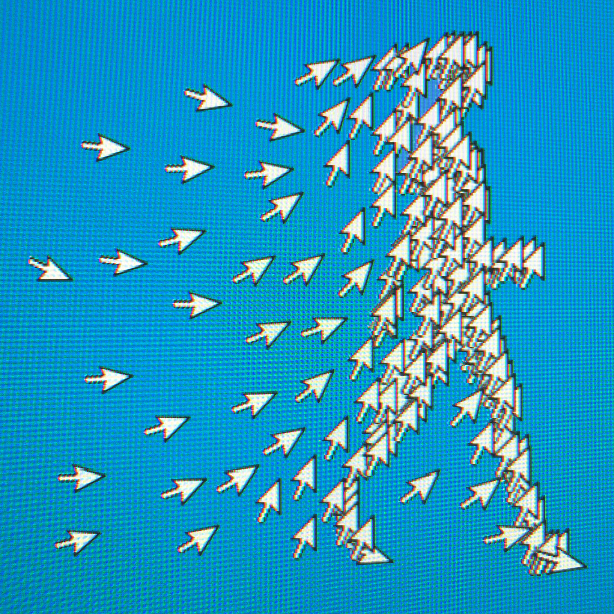

Why Does ‘First Man’ Say Gemini as ‘Geminee’? NASA Explains. Sorta.

In “First Man,” the last syllable of Gemini rhymes with knee and everyone pronounces it that way, including, from left, Corey Stoll, Lukas Haas and Ryan Gosling. CreditCreditDaniel McFadden/Universal Pictures
So which is it? How do you pronounce Gemini? In “First Man,” the new film about the Neil Armstrong and the moon landing, astronauts and NASA officials say “GEM-uh-knee.” But the first pronunciation in the Webster’s New World College Dictionary Fifth Edition, the standard work used by The New York Times to settle such matters, the first pronunciation is GEM-uh-neye,” which is the way many of us say it. Or, to use the precise dictionary typography, jem′ə nī΄ versus jem′ənē΄.Really, though, which is right? The 10 crewed missions of the Gemini program, with capsules that carried two people into space in 1965 and 1966, never got the attention that the programs before and after it received. Mercury and the seven original astronauts had Tom Wolfe as chronicler in “The Right Stuff.” Apollo had the triumph of the Moon landing, the tragedy of Apollo 1 and the nail-biting return of crippled Apollo 13.Gemini, by contrast, is the middle child of the early space program, eager to please but apt to be ignored. And when it comes to saying the name aloud, there has always been some knee-eye confusion. In this newspaper, a seemingly authoritative 1965 article tried to resolve the “running debate” with a statement from NASA that the proper pronunciation is “‘Jiminy,’ as in ‘Jiminy Cricket.’”
Duality Quality

The French surfer Jorgann Couzinet rides a wave during the men’s semifinals of the 2017 World Surf League.CreditCreditJack Guez/Agence France-Presse — Getty Images
SUNDAY PUZZLE — The English language is a quirky one, as anyone in an English as a Second Language class can confirm.I’m sure other languages have their own twists on the rules of pronunciation, but English speakers — and I’m looking in particular at American English speakers, of which I am one — have more exceptions to learn. Let’s look at a classic example from “I Love Lucy” So it’s confusing. Fortunately for us, the members of Manhattan’s Jewish Association Serving the Aging (J.A.S.A.) crossword class, ably mentored by both Natan Last and Finn Vigeland, have constructed a brilliant puzzle that will hopefully clear things up.Mostly, it made me smile, and that’s a good Sunday as far as I’m concerned.If you are in the New York area and would like to learn how to make your own crossword puzzle from excellent, veteran Times constructors, the class information and registration is below. We’ve got more bang for the buck today and it really highlights how many homophones and homographs there are in the English language. Both the entries and the clues include two words that are spelled in ways that might lead you to believe that they are pronounced similarly, but they’re not.I really enjoyed this one, and once you get the schtick, the theme is fairly easy going. The only one I didn’t anticipate was 109’s BASELINE VASELINE, which is an interesting if not disgusting way to slide home, if you ask me.
The Rabbit-Hole of ‘Relevant’
When a law has a name like “Patriot” or “Freedom,” it’s a sign that you should read the fine print. Somewhere down there, in the terraced subclauses of some forgettable subsection, is a word with a special meaning, a word that offers shelter and concealment to whatever it is that the law actually does. Consider the word “relevant.” You and I use the word to distinguish what matters (the relevant) from what does not (the irrelevant). But to the National Security Agency, there was no irrelevant. Pointing to one appearance of the word in a 2006 update of the USA Patriot Act, the agency argued it could demand records of any one of our phone calls, on the very slight chance of some distant connection to terrorism. A secret court agreed, ordering phone companies to serve up our records on an “ongoing daily basis’’ — 24 hours a day, hundreds of billions of calls in all. No one knew about it until Edward Snowden revealed the existence of the program in 2013. Earlier this month, President Obama signed the USA Freedom Act, which is supposed to close this loophole. Will it? That depends on a fresh pile of fine print.Congress created the ‘relevant’ loophole soon after it learned of an even larger loophole: the free-for-all surveillance program put in place after the Sept. 11 attacks. At first, N.S.A. dragnet surveillance was so secret that it didn’t really have a name. It was simply known as ‘‘the Program’’ or ‘‘the President’s Surveillance Program’’ and later as ‘‘the Terrorist Surveillance Program’’ or by the cover term ‘‘Stellarwind.’’ As reported by the journalist Shane Harris in his book ‘‘The Watchers,’’ the N.S.A.’s data scientists came to call it ‘‘the Big-Ass Graph’’ for its tendency to generate ‘‘hairballs,’’ knotted webs of associations that rarely added up to anything. The graph began with phone ‘‘metadata’’ from Verizon and other U.S. carriers — whom their customers called, where they called from and for how long they talked. It also included Internet metadata, compelled from Silicon Valley firms, as well as data from hotels, car-rental companies, airlines and banks. In thousands of cases, it went beyond metadata to obtain the wiretapped content of phone calls or emails.
CreditCreditIllustration by Javier Jaén